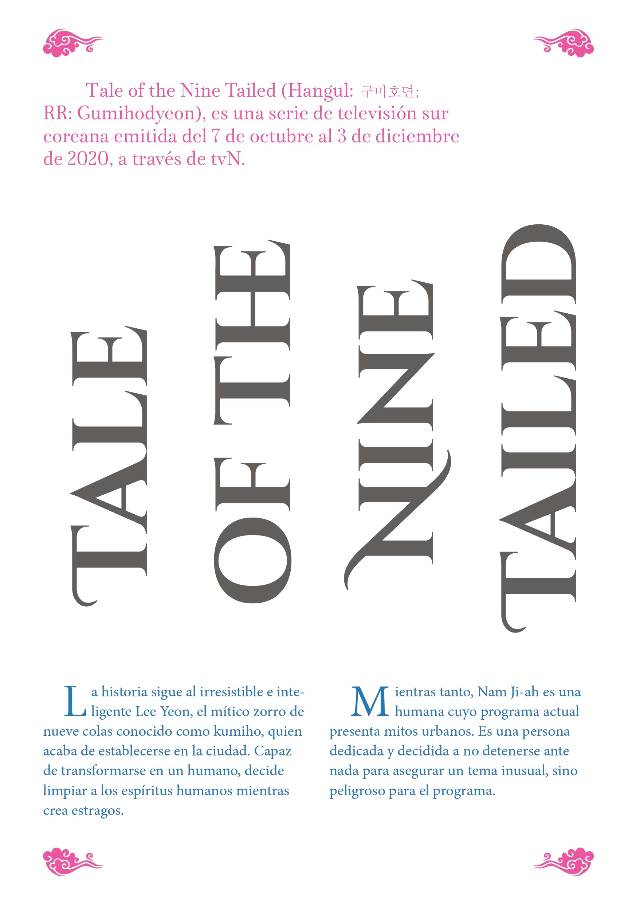
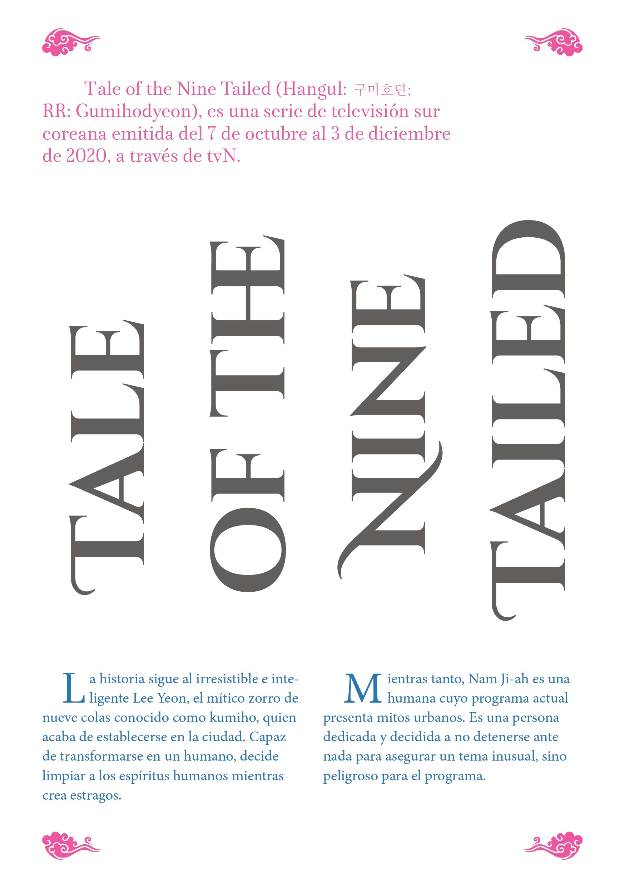

Tale of the nine tailed
El proyecto trata de una doble página que se realizó como contribución a un fanzine que se hizo a nivel de curso. El lado derecho se basa en una ilustración a dos colores para luego poder ser impresa en risografía, y en el lado izquierdo se encuentra la pagina editorial, en la cual se presenta la información y resumen de dicha ilustración inspirada en la serie "Tale of the nine tailed".
- Integrantes: Aylen Bassaletti
- Fecha: 18/04/2022
- Temática: Fanzine Colaborativo.
- Recursos usados: Procreate, Illutrator, Photoshop, InDesing y la risográfia.